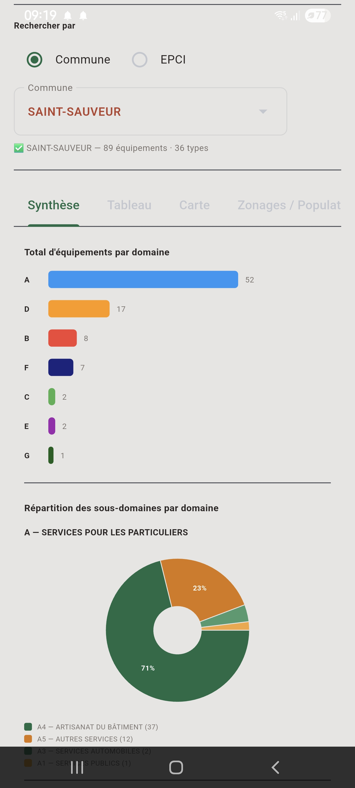
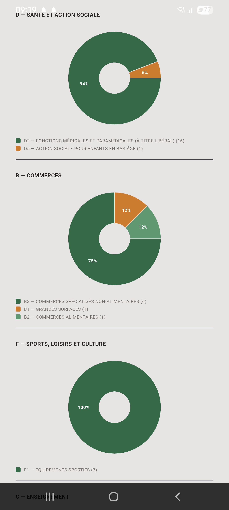
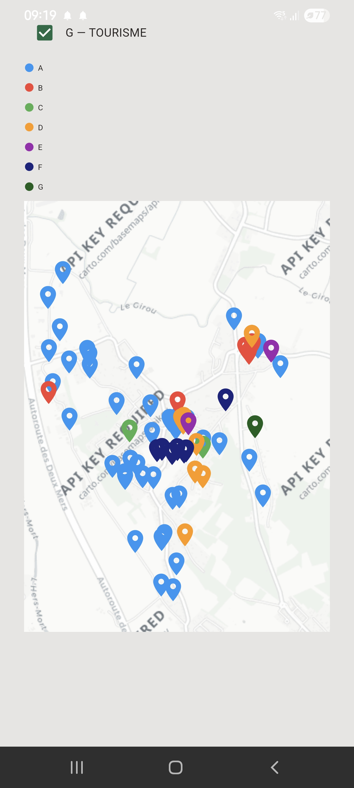

Fonctionnalités
- Import et synthèse des données BPE
- Sélecteur EPCI avec résolution automatique des communes membres
- Carte des équipements par zonage (fond de carte OpenStreetMap)
- Tableaux de résultats détaillés par catégorie d'équipement
Disponibilité
| Plateforme | Statut |
|---|---|
| Windows | Disponible (exécutable autonome) |
| Android | Disponible |
Captures d'écran



Remplacez chaque bloc pointillé par une balise <img> une fois vos captures d'écran ajoutées dans assets/screenshots/ — voir README.md.
Télécharger
Téléchargements pour PPEI-BPE :
Fichiers optionnel
Aires d'attraction des villes (2020)Bassin de vie (2022)
Unités urbaines (2020)
Population historique (2023)